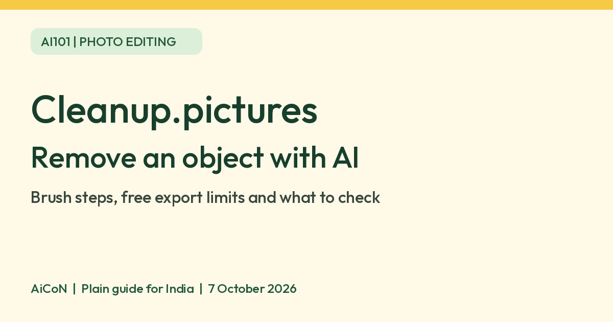

Cleanup.pictures: remove unwanted objects with AI
Cleanup.pictures is an AI photo-retouching tool in your browser. Paint over an unwanted object and it generates replacement pixels for that area. The free version limits exports to 720px, per the official FAQ.

What is Cleanup.pictures?
Cleanup.pictures edits an existing photo rather than creating a whole new picture from a text prompt. You brush over something you want removed, such as a stray object or a date stamp on your own photograph. The AI fills the selected area with a plausible replacement.
The official FAQ calls this process inpainting. The important word is plausible: the tool guesses what should fill the gap. It does not recover a hidden original scene or prove what was behind the removed object.
Where it might help in Kerala and India
As an editorial example, you might tidy a holiday photo or remove a distracting object from a picture of a craft item you made. Keep an unchanged copy. For product sales, do not remove real damage or features a buyer needs to see.
This is a browser service, not an app-store recommendation. We verified the live official website and its mobile/desktop FAQ. We did not test access from an Indian network, regional payment support or Malayalam interface support. No India-specific restriction was stated on the pages reviewed, but that is not a hands-on India availability test.
How to edit, step by step
- Keep a copy of your original photograph. Use a photo you own or have permission to edit.
- Open cleanup.pictures in your browser.
- Use the upload area to choose the image, or drag and drop it on a computer.
- Select a brush size that covers the unwanted object. Paint over the whole object, including its shadow if you want that removed too.
- Wait for the AI to fill the area. Look closely at the edges, nearby patterns, text and faces.
- If the result looks wrong, try a different selection rather than assuming the first output is accurate. The official FAQ recommends covering slightly more than the object.
- Download the result when you are satisfied. The free export is limited to 720px. Keep the original alongside it.
These steps follow the upload, brush and download workflow described on the official site. We did not upload or edit a test image, so this guide does not rate output quality.
Free version, paid version and limits
| Free verdict | The official FAQ says Cleanup.pictures is free for lower-resolution use. Exports are limited to 720px. |
|---|---|
| Input size | The site says you can import and edit images of any size. A large input does not remove the free export limit. |
| Paid option | Pro is offered for higher-quality, high-resolution processing without the size limit stated for free exports. We did not verify an India checkout total or tax-inclusive INR price. |
| Trial | The FAQ advertises an HD trial. Its precise duration and account-specific conditions were not verified. |
| Export detail | The site uses the wording 720px. We did not verify which dimension is capped or the final file format, so do not assume a specific 720p video-style size. |
Do not confuse a clean photo with a true photo
AI retouching changes the picture. A convincing result can still invent texture, distort an edge or erase useful information. Review it at full size before posting or printing.
- Do not use the edited output as an unchanged record for insurance, legal evidence or other factual claims.
- Do not remove watermarks from someone else's image without an explicit licence. The official FAQ gives this warning too.
- Avoid uploading identity documents, private medical material or sensitive personal photos. We did not verify image-retention or processing-location policies.
- For a sales listing, keep real defects visible and be honest about edits.
Frequently asked questions
Is it free?
Yes, with a 720px export limit according to its FAQ. High-resolution processing is a paid option.
Does it reveal what was really behind an object?
No. The official page says the AI guesses what was behind it. Treat the filled area as generated image content.
Can I upload a large photo?
The site says inputs can be any size, but the free export remains capped.
Can I remove a watermark?
Only if you have an explicit licence that permits doing so. Do not use object removal to bypass another person's image rights.
Should I use it for printing?
Check the exported resolution against your printer's requirements. The free limit may not suit your intended print; print quality was not tested.
Sources: Official tool and FAQ, Official Clipdrop Cleanup page. Checked 7 October 2026.